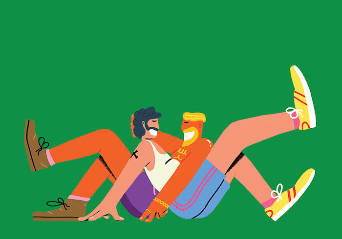
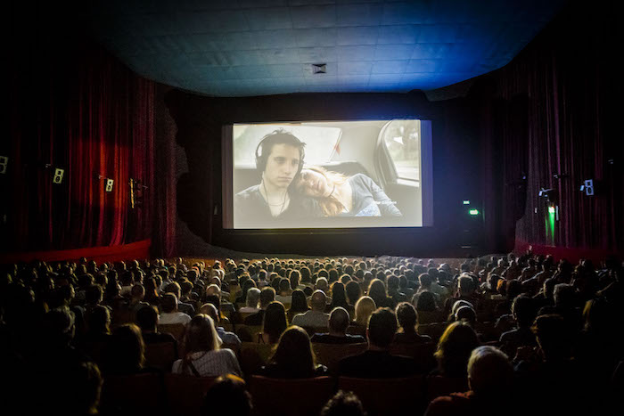
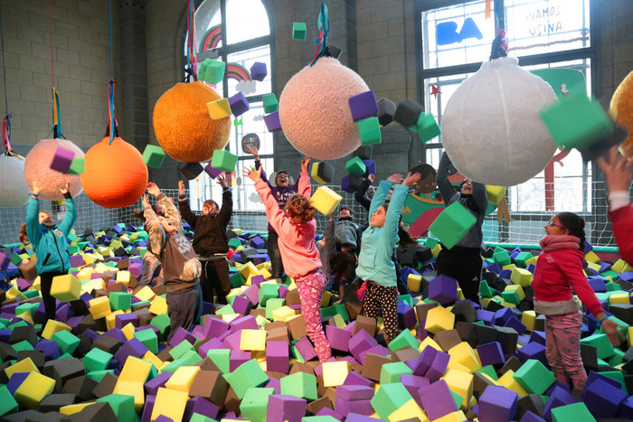
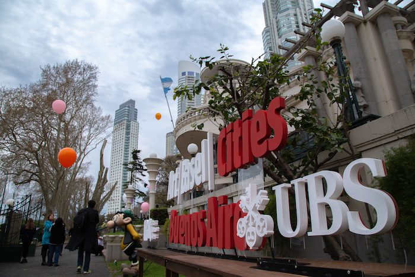
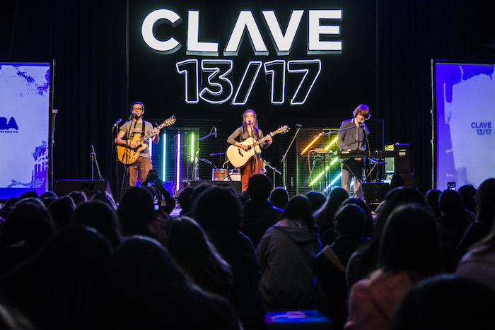
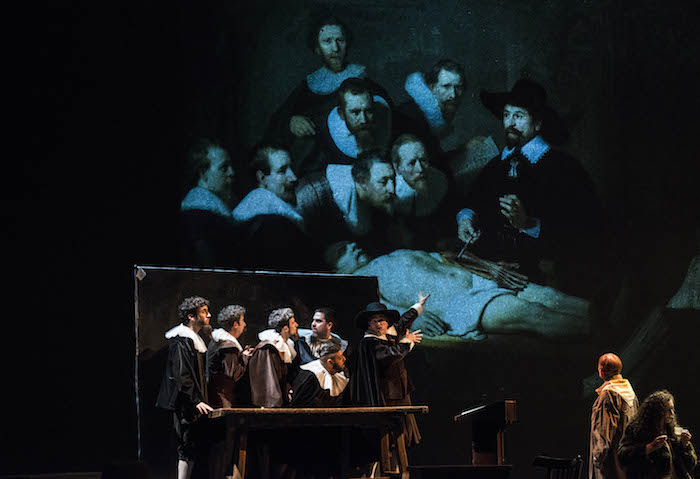

Durante 2018 generamos 12 mil propuestas culturales a lo largo y ancho de la Ciudad. En Buenos Aires la cultura no está en un solo lugar, sino que nos sorprende en cada barrio y en las plazas, los parques y las calles.
Además de tener propuestas en los espacios propios, se programaron más de 600 actividades en las plazas, los parques y las calles, para promover el acceso a la cultura en todos los barrios de la Ciudad.
De las más de mil actividades y cursos de formación que se programaron, 165 fueron destinados a vecinos de los barrios emergentes.
_
Promovimos todos los intereses artísticos y culturales, potenciando una sinergia entre disciplinas tradicionales y otras emergentes, además de generar las herramientas para los creadores de la cultura.
Programamos funciones de teatro, cine, conciertos, recitales, visitas y recorridas por la Ciudad, pero también un gran porcentaje fueron talleres, seminarios, charlas e instancias de formación para los nuevos creadores.
Realizamos actividades en toda la Ciudad, trazamos circuitos culturales y generamos sinergia entre las disciplinas para que Buenos Aires siga siendo un centro cultural al aire libre donde todos puedan transformarse en protagonistas de la cultura.
En los 12 meses del 2018 disfrutamos de festivales, talleres, cursos, recitales al aire libre y en los espacios de la Ciudad, ciclos de cine, exposiciones en los museos. Una gran diversidad de propuestas distribuida durante todo el año.
En el Centro Cultural Recoleta y en Plaza Francia se pudo disfrutar durante enero y febrero de un programa especial de verano para jóvenes y adolescentes, con el amor como eje central de las actividades.
El Bafici celebró en 2018 su 20 aniversario. Con 107 premieres internacionales y otras 99 americanas y latinoamericanas, el Festival fue el espacio para un cine innovador y de vanguardia. Se apostó por la expansión territorial, con la cifra récord de 36 sedes, distribuidas en más de 15 barrios porteños.
La Ciudad ofreció una programación especial en el invierno para todas las edades. Con más de 350 actividades a lo largo de las vacaciones, en su mayoría gratuitas, la oferta porteña incluyó espectáculos, talleres, shows musicales, muestras, cine y mucho más.
Del 6 al 12 de septiembre se llevó a cabo la Semana Art Basel Cities: Buenos Aires. Un proyecto que fomentó la visibilidad del arte contemporáneo con una gran exhibición de arte, eventos, charlas, clases magistrales, actividades públicas y 18 intervenciones de reconocidos artistas distribuidos en 5 barrios de la Ciudad.
Booktubers, raperos, cosplayers, gamers, fandancers del k-pop, freestylers, fans de Harry Potter y más referentes de las nuevas escenas, se dieron cita en el Recoleta para el primer festival centennial organizado por adolescentes en el que más de 200 chicas y chicos, entre 13 y 17 años, compartieron qué piensan y sienten.
Luego de la reapertura del Teatro San Martín en 2017, durante el 2018 el Complejo Teatral consolidó un año increíble con una programación de lujo que incluyó Piel de Lava, Campo Minado, Hipervínculo, entre muchos otras obras.

Si querés conocer más información sobre la cultura en la Ciudad entrá en buenosaires.gob.ar/cultura o seguinos por nuestras redes sociales @datacultura